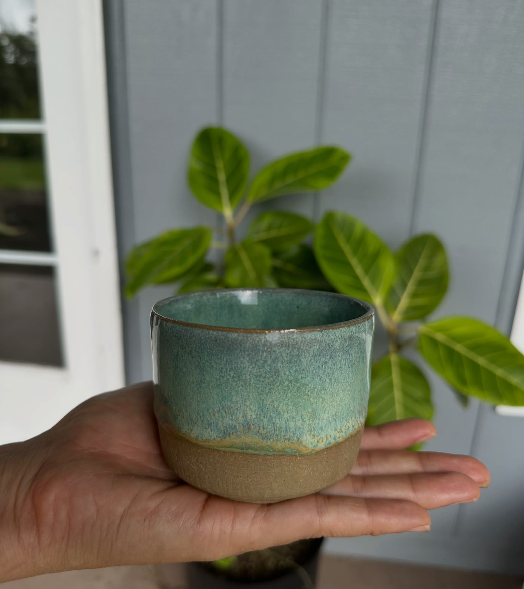
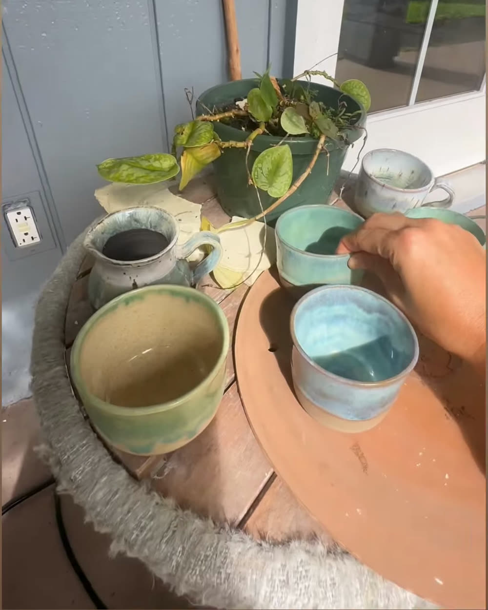
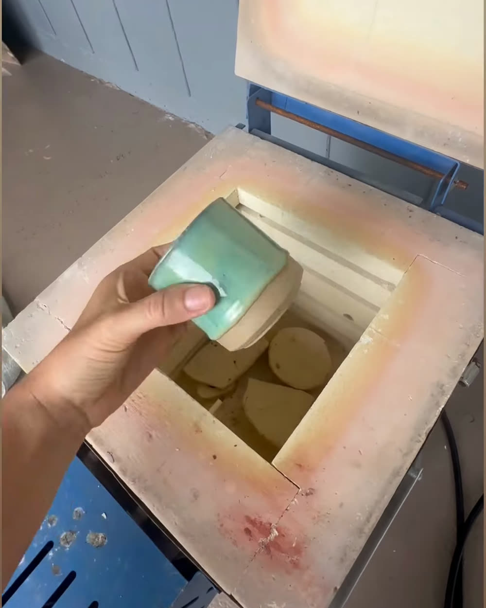

Wheel-thrown · Big Island of Hawaiʻi
Learning the
language of
moss & honey
Cups, mugs and bowls thrown one at a time and fired in a small kiln on the lānai. Every glaze is a guess that the fire settles, which is most of why I keep opening the lid.

The work
Everything here came out of one kiln load. Pieces are one-of-a-kind. When a glaze breaks the way this batch did, it does not repeat exactly.

September 2026
One load, nothing repeated.

The studio
It is a wheel, a small kiln and a stretch of lānai on the Big Island. Batches are small because the kiln is small. A load is five or six pieces, and I open it the same morning it is cool enough to touch.
I like a glaze that admits where it came from: a rim that thins out pale, a belly where the colour gathers, a foot left bare so you can still feel the clay. None of it is sealed shut. You are meant to hold it.
- Made Big Island of Hawaiʻi
- Method Thrown on the wheel, trimmed by hand
- Firing Small electric kiln, at home
- Batch Five or six pieces at a time
Available pieces & commissions
Ask me about a piece
Most of what you see here is one-of-a-kind, and pieces come and go with each kiln load, so the honest answer to “is this still available?” is: ask. Tell me which one caught you and I will let you know what is still on the shelf.
Commissions are open too. If you want something made for you, send me a note. It might be a pair of morning mugs, a bowl in a particular green, or a set for a wedding or a new house. Helpful things to include:
- What it is for, and roughly how many pieces
- A form you like from the work above, or a rough sketch
- Colours you are drawn to (a photo of something is perfect)
- When you need it by (a kiln load takes a few weeks, so early is kind)
No set price list, since it depends on the piece and the size of the order. I will always quote before anything gets made.